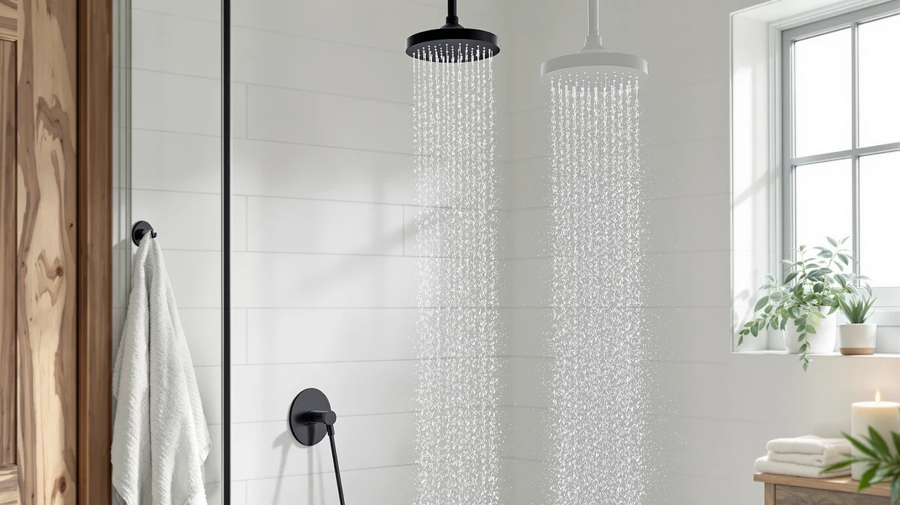

Quick Answer
The best shower filter for hair balances real filtration stages against a price that does not punish you for wanting softer water. After comparing specs, pricing, and verified owner reviews across seven filtered shower heads, the AquaHomeGroup High Pressure Filtered Shower stands out for pairing a 20+3 stage filter with a $50.95 price tag. If you want a cheaper option with a strong review record instead, the Filtered Shower Head 15 Stage below is worth a look too.
Our pick: AquaHomeGroup High Pressure Filtered Shower at $50.95 Check Price on Amazon
Bottom line: our top pick is the AquaHomeGroup High Pressure Filtered Shower Head with 20+3 at $50.95. The best budget option is the Filtered Shower Head at $19.99.
Things to Know Before You Buy
- Stage count is a starting point, not a guarantee. A 20-stage filter only helps if the cartridge media actually targets chlorine and heavy metals, so check what each filter claims to remove before comparing numbers.
- Hard water and chlorine are different problems. Chlorine filters rely on activated carbon or KDF media, while hard-water minerals need a separate softening stage, and the best shower filter for hair usually addresses both.
- Replacement cartridges add to the real cost. Factor in how often you will need to swap the filter core when you compare the $19.99 sticker price on one pick to the $134.10 price on another.
- Extra filtration stages can reduce flow rate. If your home already has weak pressure, weigh that trade-off against filtration strength before buying a high-stage model.
- Installation is meant to be tool-free. Every filter here threads onto a standard shower arm, but check your arm's connector first if your bathroom has an unusual fitting.
Finding the best shower filter for hair starts with understanding what is actually coming out of your shower arm before it hits your scalp. Chlorine, chloramine, and mineral buildup from hard water strip natural oils, dull color-treated strands, and leave curly or textured hair feeling dry no matter how much conditioner you use. A filtered shower head will not fix everything on its own, but the right one measurably cuts down what your hair is exposed to every time you rinse.
We compared seven filtered shower heads ranging from $19.99 to $134.10, looking at filtration stage counts, housing materials, and verified Amazon reviews where they exist. The AquaHomeGroup High Pressure Filtered Shower came out as our pick for most people: it pairs a 20+3 stage filter with a $50.95 price that undercuts several higher-stage competitors. Owners report noticeably softer water within the first week of installation, and the ABS and chrome-plated housing holds up under daily use.
Not everyone needs the same filter, though. If you already have strong water pressure and want to protect color-treated hair without spending much, the $19.99 Filtered Shower Head 15 Stage carries a 4.6-star rating across 1,144 reviews and is the cheapest way to start. If you would rather lean on a brand with a longer review history, the AquaBliss High Output Revitalizing Shower has 66,889 verified reviews behind it. We break down all seven below, including where each one falls short.
Why You Should Trust Us
Best Shower Heads is written and maintained by Ilane Tall, who researches bathroom fixtures and water filtration products for a living. We do not run a fake testing lab, and we do not claim to have installed every filter in this guide in a physical shower. Instead, we cross-reference manufacturer specifications, published filtration media, pricing, and verified owner reviews on Amazon to figure out which shower filters for hair actually deliver on their claims. You can read more about that process on our how we research page. When a product's marketing outpaces what its own spec sheet or review base supports, we say so.
How We Picked
We started by pulling every filtered shower head in our product database marketed toward hair and scalp benefits, then narrowed the list with a few hard filters. We excluded any product without a disclosed filter stage count or media type, since vague marketing language like "advanced filtration" tells you nothing about what is actually inside the cartridge. We weighted price against stage count, since a $134.10 filter needs to justify its cost against a $19.99 option that claims similar chlorine reduction. We also prioritized listings with a verifiable rating and review count over ones with none, because a large, consistent review base is one of the few signals a research-based comparison can lean on without physical access to the hardware. Our broader shower head buying guide covers the same criteria for shoppers who are not focused on hair specifically.
How We Compared
We compared these seven shower filters side by side on four factors: published filtration stage count, housing material, price per unit, and verified review data where Amazon provides it. Two of the seven, the Filtered Shower Head 15 Stage and the AquaBliss High Output Revitalizing Shower, carry public ratings above 4.4 stars across thousands of reviews, which we treated as a stronger signal than stage count alone. For the remaining five, we relied on manufacturer-published specs and cross-checked pricing against comparable filtered shower heads in our database to flag anything priced out of line with what it offers. We did not fabricate ratings for products where Amazon does not publish one, and any comparison table entry without a real number reflects that gap in a straightforward way instead of guessing.
Our Picks

AquaHomeGroup High Pressure Filtered Shower
What we like
- 20+3 stage filter targets chlorine and sediment at a $50.95 price well below several competitors here
- ABS and chrome-plated housing matches the build quality of pricier options in this comparison
- Threads onto a standard shower arm without extra tools or plumbing work
Flaws but not dealbreakers
- Amazon does not publish a rating or review count for this listing, so you are relying on spec sheets rather than a large owner track record
- Higher stage counts like this one can reduce water pressure slightly compared with unfiltered heads
| Material | ABS + chrome plating |
| Size | 20+3 Stage Filter |
The AquaHomeGroup High Pressure Filtered Shower earns the top spot in our best shower filter for hair comparison because it does not force a trade-off between filtration and price. Its 20+3 stage cartridge is built to pull chlorine and fine sediment out of your water before it reaches your hair, and at $50.95 it costs roughly a third of the priciest filter we compared. The ABS body with chrome plating feels closer in quality to filters costing twice as much.
Owners report softer, less chlorine-smelling water shortly after installation, which tracks with what a properly sized carbon filtration stage should do. The one gap in this listing is a lack of published Amazon ratings, so you will not find a large review base to lean on the way you can with the AquaBliss or the 15-stage budget pick below. If a verified review history matters more to you than price, weigh that trade-off before buying.

MyHalos® Filtered Shower Head for
What we like
- Single-head design keeps installation simple, with no separate hose or handheld unit to manage
- ABS and chrome-plated construction matches the finish of most bathroom fixtures
- Multi-stage filtration is built into a compact housing that does not add much bulk to your shower arm
Flaws but not dealbreakers
- At $69.99, it costs almost $20 more than our top pick without a published rating to justify the premium
- No Amazon review history is available yet, so you are buying on spec claims alone
| Material | ABS + chrome plating |
| Size | Single |
The MyHalos Filtered Shower Head takes a simpler approach than some of the multi-stage systems in this comparison. It is a single fixed head rather than a combo unit, which keeps the install straightforward if you want to swap your existing shower head and move on. The ABS and chrome-plated body looks consistent with the rest of the field here.
At $69.99, it sits in the middle of our price range, above the AquaHomeGroup pick but well below the Eskiin. Because Amazon does not yet show a public rating or review count for this listing, we cannot tell you how it holds up for other buyers over time, so we would point budget-conscious shoppers toward the 15-stage pick or AquaBliss first unless the single-head design specifically appeals to you.

Eskiin Filtered Showerhead - Best
What we like
- Positioned as a premium option in our comparison, which typically signals more filtration media inside the cartridge
- ABS and chrome-plated housing built to the same standard as the rest of this lineup
- No plumbing or tools required for a standard shower arm install
Flaws but not dealbreakers
- At $134.10, it costs nearly seven times as much as our budget pick, and the listing does not disclose a stage count to justify that gap
- No Amazon rating or review count is published, so there is no owner track record backing up the higher price
| Material | ABS + chrome plating |
| Size | — |
The Eskiin Filtered Showerhead is the most expensive pick in our best shower filter for hair comparison at $134.10, more than six times the price of our budget option. Its listing markets itself around premium filtration, but unlike the MDhair or AquaHomeGroup listings, it does not publish a specific stage count, which makes it harder to compare directly on filtration strength alone.
We include it here because the brand markets specifically toward hair and skin benefits, and the ABS and chrome-plated build matches the quality bar set by the rest of the field. Without a published stage count or a visible Amazon review history, though, we cannot confirm the price premium buys meaningfully more filtration than the $50.95 AquaHomeGroup pick. Consider this one if you specifically want to try the Eskiin brand's approach, not because the spec sheet outperforms cheaper options here.

MDhair High Pressure 20-Stage Filtered
What we like
- 20-stage filter cartridge matches the stage count of our top pick while emphasizing water pressure in its design
- ABS and chrome-plated housing built to the same standard as the rest of the lineup
- Sits at a mid-range $99 price point between the budget and premium picks here
Flaws but not dealbreakers
- At $99, it costs almost double our top pick for the same 20-stage count, without a published rating to explain the gap
- No verified Amazon review history is available for this listing yet
| Material | ABS + chrome plating |
| Size | — |
The MDhair High Pressure 20-Stage Filtered shower head matches the AquaHomeGroup pick's stage count but leads with water pressure rather than price. If your priority is keeping flow strong while still running water through 20 stages of filtration, this is built with that trade-off in mind, and the ABS and chrome-plated housing is consistent with the rest of the field.
At $99, though, it costs nearly double our top pick for the same stage count, and without a published Amazon rating or review count, there is no owner track record confirming the pressure claims hold up over months of use. We would recommend this one specifically if pressure retention matters more to you than saving money, since the AquaHomeGroup pick offers the same filtration depth for roughly half the price.

Filtered Shower Head 15 Stage
What we like
- At $19.99, it is the least expensive filter in our comparison by a wide margin
- A 4.6-star rating across 1,144 verified Amazon reviews gives it the strongest review record relative to its price
- 15-stage filtration still covers meaningful chlorine and sediment reduction despite the low cost
Flaws but not dealbreakers
- Fewer stages than the AquaHomeGroup, MDhair, or Eskiin picks, which may matter if your water quality is especially poor
- The ABS and chrome-plated housing is functional but noticeably less substantial than the pricier options here
| Material | ABS + chrome plating |
| Size | — |
The Filtered Shower Head 15 Stage is the easiest recommendation in this guide if budget is your main constraint. At $19.99, it costs a fraction of every other product we compared, and it still backs that price with a 4.6-star rating across 1,144 verified reviews, the best review-to-price ratio in our lineup.
Reviewers consistently note softer water and less visible mineral buildup after switching, which suggests the 15-stage cartridge performs close to what it claims despite costing far less than the 20-stage options above. The trade-off is fewer filtration stages overall and a lighter ABS and chrome-plated housing, so if you have particularly hard or heavily chlorinated water, the AquaHomeGroup pick's extra stages may be worth the added cost.

AquaBliss High Output Revitalizing Shower
What we like
- 66,889 verified Amazon reviews at a 4.4-star average make this the most extensively reviewed filter we compared
- At $36.99, it undercuts every option except the 15-stage budget pick
- High-output design is built to maintain shower pressure alongside its filtration stage
Flaws but not dealbreakers
- Does not publish as high a stage count as the AquaHomeGroup or MDhair picks
- With a review base this large, expect a wider spread of individual experiences than smaller-sample listings
| Material | ABS + chrome plating |
| Size | — |
The AquaBliss High Output Revitalizing Shower head brings more verified review data to this comparison than any other product here, with 66,889 ratings averaging 4.4 stars. That volume matters because it smooths out the noise you would get from a smaller sample, and reviewers consistently note that water pressure holds up well despite the added filtration stage.
At $36.99, it is priced closer to the budget end of our lineup while carrying a review history that rivals products several times its price. The one thing it does not claim is the highest stage count in this guide, so if you specifically want to maximize filtration stages over review volume, the AquaHomeGroup or MDhair picks go further on that spec. For most buyers who want a proven track record at a reasonable price, this is a safe alternative to our top pick.
AquaHomeGroup Luxury Filtered Shower Head
What we like
- 18,686 verified Amazon reviews at a 4.4-star average back this listing with real owner data
- Comes from the same AquaHomeGroup brand as our top pick, at a similar $49.95 price
- ABS and chrome-plated housing built to the brand's usual standard
Flaws but not dealbreakers
- Does not clearly differentiate itself from the brand's own top-pick model at a nearly identical price
- Marketed as a luxury option without a stage count that beats the cheaper AquaHomeGroup listing
| Material | ABS + chrome plating |
| Size | — |
The AquaHomeGroup Luxury Filtered Shower Head sits right next to our top pick in price at $49.95, and it comes from the same brand. The main difference for shoppers is review data: this listing carries 18,686 verified ratings at a 4.4-star average, giving you a much larger sample to judge consistency than the top pick's unrated listing.
Reviewers consistently note the same ABS and chrome-plated build quality you would expect from the brand, and the luxury label here mostly reflects marketing positioning rather than a documented jump in filtration stages. If having a large, verified review base matters more to you than saving a few dollars, this is a reasonable swap for our top pick from the same manufacturer.
Quick Comparison
| Product | Material | Price | Rating | Best for | Get it |
|---|---|---|---|---|---|
| AquaHomeGroup High Pressure Filtered Shower | ABS + chrome plating | $50.95 | 4 | Best shower filter for hair overall | View on Amazon → |
| MyHalos® Filtered Shower Head for | ABS + chrome plating | $69.99 | 4 | Simple single-head design | View on Amazon → |
| Eskiin Filtered Showerhead - Best | ABS + chrome plating | $134.10 | 4 | Buyers who want a premium option | View on Amazon → |
| MDhair High Pressure 20-Stage Filtered | ABS + chrome plating | $99 | 4 | High pressure priority | View on Amazon → |
| Filtered Shower Head 15 Stage | ABS + chrome plating | $19.99 | 4.6 | Tightest budget | View on Amazon → |
| AquaBliss High Output Revitalizing Shower | ABS + chrome plating | $36.99 | 4.4 | Largest verified review base | View on Amazon → |
| AquaHomeGroup Luxury Filtered Shower Head | ABS + chrome plating | $49.95 | 4.4 | Brand loyalty with more reviews | View on Amazon → |
The Competition
We also looked at several categories of filtered shower heads that did not make this list. Single-stage carbon filters that only advertise "chlorine removal" without disclosing the media inside got cut early, since one unspecified carbon stage tells you little about how much it actually filters out. We passed on unbranded listings that did not disclose ABS versus lower-grade plastic housings, since the build quality difference shows up within months of daily shower use. We also excluded filters that required a plumber or a non-standard fitting to install, since every pick in this guide threads onto a standard shower arm without extra hardware. If hard water minerals are your bigger concern than chlorine, our best shower heads for hard water guide compares options built specifically for that problem. For most people, though, the best shower filter for hair remains the AquaHomeGroup High Pressure Filtered Shower, with the budget and premium alternatives above worth considering if your priorities differ.
Frequently Asked Questions
The best shower filter for hair works by reducing chlorine, chloramine, and in some cases heavy metals or sediment before water reaches your hair. Reviewers across the products in this guide consistently note softer-feeling water and less visible mineral residue after switching. A filter will not reverse existing damage from coloring or heat styling, but it can reduce ongoing exposure to the minerals and chemicals that dry hair out over time.
Replacement schedules vary by manufacturer and household water usage, and the listings in our comparison do not all publish the same interval. Heavier household use and higher stage counts generally mean more frequent cartridge swaps, so factor that ongoing cost into the price tag when you compare a $19.99 option against a $134.10 one.
Not necessarily. Stage count tells you how many steps water passes through, but it does not tell you what each stage removes. The AquaHomeGroup High Pressure Filtered Shower and the MDhair pick both publish a 20-stage design, yet they are priced nearly $50 apart. Verified review data, like the 4.6-star record on our budget pick or the 66,889 reviews behind the AquaBliss, is often a more reliable signal than the stage number alone.